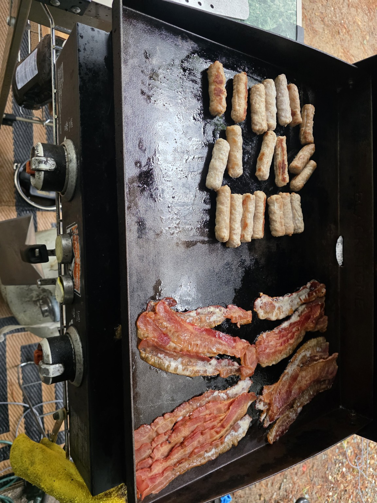

Trail Tater Kitchen
Recipes we actually cook, eat and bring back on the next trip. Blackstone meals, campground breakfasts, camp-oven baking, sweets and the shortcuts that make feeding a crew easier.
Start with the burritos →
Recipes worth packing for.
The web version is built for a phone at the campsite. When a printable Trail Tater PDF is ready, the recipe page will also have a download button so you can save it, print it, or keep it in the camper.

Trail Tater Steak and Cheese Burritos
Shaved steak, onions, peppers and provolone wrapped up, sealed and crisped right on the griddle.

Lost River Mountain Breakfast
A campsite breakfast built for a hungry family crew and a long day in the White Mountains.

Walker Brook Mexicorn
Our mayo-free campground take on Mexican street corn.

Old Man of the Mountain Biscuits
Camp-oven biscuits with the cheese option, built for breakfast or alongside dinner.
Trail Tater Gluten-Free Biscuits
An easy propane-oven option so everybody at camp gets biscuits.

Trail Tater Butt Crack Fudge
The dangerously easy sweet-condensed-milk fudge that somehow became part of the family camping vocabulary.